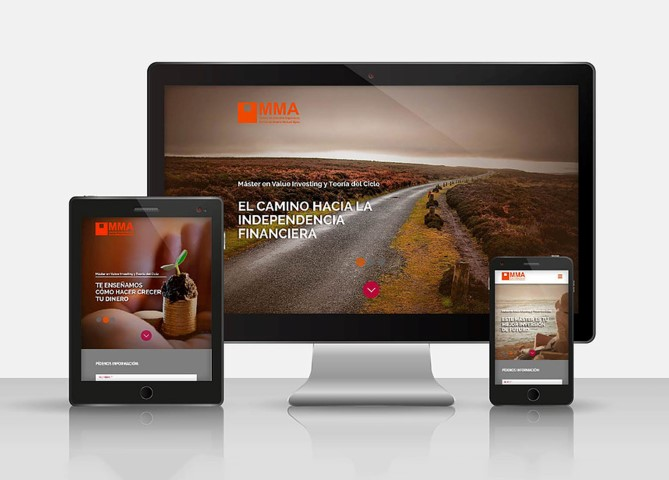

DISEÑO WEB
Proyecto de rediseño de landing pages para los masters del Centro de Estudios Online Manuel Ayau, dicho proyecto consistía en el diseño para el máster en Value Investing y Teoría del Ciclo, Máster en Economía y Diplomado en Tecnología Bim Y Gis.
Programas utilizados: Photoshop, Indesign e Illustrator.
- 